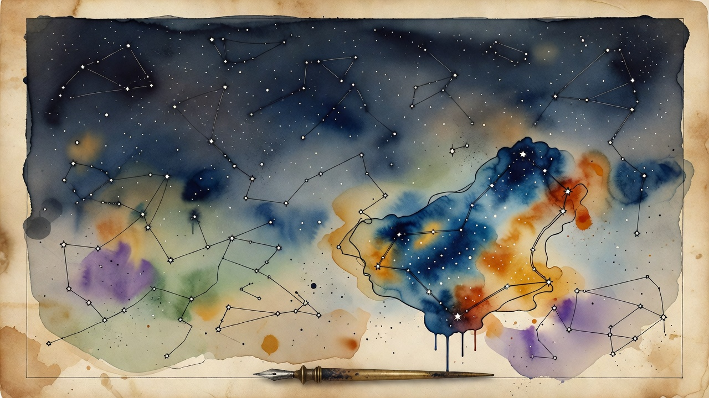

FORMAL PROOF
Claude Completes First Machine-Checked Proof of Fermat's Last Theorem
Anthropic says Claude produced the first fully formalized proof of Fermat's Last Theorem in the Lean proof assistant: more than 13 million lines and over 29,000 supporting theorems, completed and machine-verified in about a month. The theorem stood unproven for over 350 years before Andrew Wiles, and a fully machine-checkable version has been a long-standing open goal in formal mathematics. The result is a landmark for AI in mathematics.